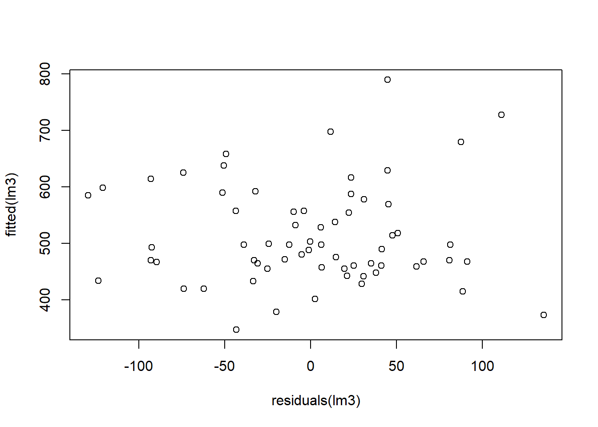

MRM is a model for the association in the population between multiple explanatory variables x1, x2, …, xk and a response y. Multiple regression separates the effects of each explanatory variable on the response and reveals which really matter.
…
Dummy Variable
A dummy variable is a variable that only akes values 0 to 1 and usually expresses a qualitative difference (man/woman). Those models are different in the intercept and the slope.
…
# -----------------------------------------------------------------------------------------------
# Case I: Estimating Sales in the Mall
# -----------------------------------------------------------------------------------------------
# Load the data
df <- read_xls("3_Mallsales.xls", col_types = c("numeric", "numeric", "numeric","numeric"))
# Plot sales against competitors
plot(df$Competitors ,df$Sales, main = "Sales v.s. Competitors", xlab = "Competitors", ylab = "Sales volume in $/sqm")# What is the correlation between both variables?
cor(df$Sales,df$Competitors)## [1] 0.06661552# Simple regression model
lm1 <- lm(df$Sales ~ df$Competitors)
summary(lm1)##
## Call:
## lm(formula = df$Sales ~ df$Competitors)
##
## Residuals:
## Min 1Q Median 3Q Max
## -221.38 -54.47 -4.84 44.16 322.53
##
## Coefficients:
## Estimate Std. Error t value Pr(>|t|)
## (Intercept) 502.202 25.444 19.74 <2e-16 ***
## df$Competitors 4.635 8.747 0.53 0.598
## ---
## Signif. codes: 0 '***' 0.001 '**' 0.01 '*' 0.05 '.' 0.1 ' ' 1
##
## Residual standard error: 105.8 on 63 degrees of freedom
## Multiple R-squared: 0.004438, Adjusted R-squared: -0.01136
## F-statistic: 0.2808 on 1 and 63 DF, p-value: 0.598View(df)
# Plot the residuals against the redicted sales volume
plot(residuals(lm1),fitted(lm1))# Let us calculate a model in which we also incorporate the area's income level as an explanatory variable
lm2 <- lm(df$Sales ~ df$Competitors + df$Income_Level)
summary(lm2)##
## Call:
## lm(formula = df$Sales ~ df$Competitors + df$Income_Level)
##
## Residuals:
## Min 1Q Median 3Q Max
## -136.02 -49.76 11.97 48.47 136.90
##
## Coefficients:
## Estimate Std. Error t value Pr(>|t|)
## (Intercept) 60.3587 49.2902 1.225 0.225374
## df$Competitors -24.1650 6.3899 -3.782 0.000353 ***
## df$Income_Level 7.9660 0.8382 9.503 1.03e-13 ***
## ---
## Signif. codes: 0 '***' 0.001 '**' 0.01 '*' 0.05 '.' 0.1 ' ' 1
##
## Residual standard error: 68.03 on 62 degrees of freedom
## Multiple R-squared: 0.5947, Adjusted R-squared: 0.5817
## F-statistic: 45.49 on 2 and 62 DF, p-value: 6.915e-13# Plot the resiudals
plot(residuals(lm2),fitted(lm1))# Let us also incorporate the number of visitors
lm3 <- lm(df$Sales ~ df$Competitors + df$Income_Level + df$Visitors)
summary(lm3)##
## Call:
## lm(formula = df$Sales ~ df$Competitors + df$Income_Level + df$Visitors)
##
## Residuals:
## Min 1Q Median 3Q Max
## -129.640 -33.499 5.873 38.100 135.879
##
## Coefficients:
## Estimate Std. Error t value Pr(>|t|)
## (Intercept) -208.8365 73.2674 -2.850 0.00595 **
## df$Competitors -44.2134 7.1109 -6.218 5.02e-08 ***
## df$Income_Level 6.8809 0.7689 8.949 1.05e-12 ***
## df$Visitors 0.1932 0.0426 4.536 2.74e-05 ***
## ---
## Signif. codes: 0 '***' 0.001 '**' 0.01 '*' 0.05 '.' 0.1 ' ' 1
##
## Residual standard error: 59.31 on 61 degrees of freedom
## Multiple R-squared: 0.697, Adjusted R-squared: 0.6821
## F-statistic: 46.77 on 3 and 61 DF, p-value: 8.129e-16# Plot the resiudals
plot(residuals(lm3),fitted(lm3))
# What is the correlation between all explanatory variables?
cor(df)## Sales Income_Level Competitors Visitors
## Sales 1.00000000 0.7079956 0.06661552 0.4269416
## Income_Level 0.70799556 1.0000000 0.47428000 0.5306714
## Competitors 0.06661552 0.4742800 1.00000000 0.7154595
## Visitors 0.42694160 0.5306714 0.71545946 1.0000000# -----------------------------------------------------------------------------------------------
# Case II: Estimating the Gender Bias with Mock Data
# -----------------------------------------------------------------------------------------------
df <- read_excel("4_Employee_Salaries_Illustration.xlsx", col_types = c("numeric", "numeric", "numeric", "numeric", "text"))
df ## # A tibble: 174 x 5
## `Salary ($000)` `Years of Experience` Group `Group x Years` Sex
## <dbl> <dbl> <dbl> <dbl> <chr>
## 1 148 16.7 1 16.7 male
## 2 165 6.7 1 6.7 male
## 3 145 14.8 1 14.8 male
## 4 139 13.9 0 0 female
## 5 128 8.5 0 0 female
## 6 173 18.2 1 18.2 male
## 7 133 9.1 0 0 female
## 8 128 4.7 1 4.7 male
## 9 154 11.5 1 11.5 male
## 10 121 8.5 0 0 female
## # ... with 164 more rowsdf$male<-ifelse(df$Sex=="male",1,0)
# Compute a model of salary on years of education and a dummy.
lm1<-lm(df$`Salary ($000)`~ df$`Years of Experience`+ df$Group)
summary(lm1)##
## Call:
## lm(formula = df$`Salary ($000)` ~ df$`Years of Experience` +
## df$Group)
##
## Residuals:
## Min 1Q Median 3Q Max
## -27.4441 -6.9403 -0.8341 7.7577 31.3613
##
## Coefficients:
## Estimate Std. Error t value Pr(>|t|)
## (Intercept) 133.4676 2.1315 62.616 < 2e-16 ***
## df$`Years of Experience` 0.8537 0.1925 4.435 1.64e-05 ***
## df$Group 1.0242 2.0576 0.498 0.619
## ---
## Signif. codes: 0 '***' 0.001 '**' 0.01 '*' 0.05 '.' 0.1 ' ' 1
##
## Residual standard error: 11.78 on 171 degrees of freedom
## Multiple R-squared: 0.1311, Adjusted R-squared: 0.1209
## F-statistic: 12.9 on 2 and 171 DF, p-value: 6.047e-06# Plot the data and both models in the same scatter!
plot(df$`Salary ($000)`~ df$`Years of Experience`, main ="Salary by Years of Experience and Gender", ylab= "Salary in 1000 USD", xlab = "Years of Experience")
lines(133.4676+1.0242 + 0.8537*c(1:25),col="red")
lines(133.4676+ 0.8537*c(1:25),col="blue")
legend("bottomright", legend=c("MEN","WOMEN"), lty=c(1,1), lwd=2, cex=1, col=c("red","blue"))# What if the bias comes with the years of experience?
# What if the entry salary of men and women is the same, but they develop differently accross time?
# Repeat the analysis but incorporate an interaction variable.
# Let's go back to the slides and get some theoretical intuition.
lm2<-lm(df$`Salary ($000)`~ df$`Years of Experience`+df$Group + df$`Group x Years`)
summary(lm2)##
## Call:
## lm(formula = df$`Salary ($000)` ~ df$`Years of Experience` +
## df$Group + df$`Group x Years`)
##
## Residuals:
## Min 1Q Median 3Q Max
## -27.4266 -7.3921 -0.4461 7.6429 31.1329
##
## Coefficients:
## Estimate Std. Error t value Pr(>|t|)
## (Intercept) 130.9888 3.4902 37.531 < 2e-16 ***
## df$`Years of Experience` 1.1760 0.4076 2.885 0.00442 **
## df$Group 4.6113 4.4970 1.025 0.30663
## df$`Group x Years` -0.4149 0.4625 -0.897 0.37088
## ---
## Signif. codes: 0 '***' 0.001 '**' 0.01 '*' 0.05 '.' 0.1 ' ' 1
##
## Residual standard error: 11.79 on 170 degrees of freedom
## Multiple R-squared: 0.1352, Adjusted R-squared: 0.1199
## F-statistic: 8.859 on 3 and 170 DF, p-value: 1.728e-05# How do you interpret the results?
# Plot both models in a graph.
# Plot the data and both models in the same scatter!
plot(df$`Salary ($000)`~ df$`Years of Experience`, main ="Salary by Years of Experience and Gender", ylab= "Salary in 1000 USD", xlab = "Years of Experience")
lines(130.9888+4.6113 + (1.1760-0.4149)*c(1:25),col="red")
lines(130.9888+ 1.1760*c(1:25),col="blue")
legend("bottomright", legend=c("MEN","WOMEN"), lty=c(1,1), lwd=2, cex=1, col=c("red","blue"))# -----------------------------------------------------------------------------------------------
# Case III: Holywood Rules
# -----------------------------------------------------------------------------------------------
df <- read_excel("5_HollywoodRules.xlsx", col_types = c("text", "numeric", "numeric",
"numeric", "numeric", "numeric",
"numeric", "numeric", "numeric",
"text", "numeric", "numeric", "numeric",
"text", "numeric", "numeric", "numeric", "numeric"))
# To obtain an initial overview of the data, calculate the minimum, average, and maximum values of the variables opening gross and total U.S. gross.
summary(df$totalnonusgross)## Min. 1st Qu. Median Mean 3rd Qu. Max.
## 0 15433097 42950069 59560983 75985298 456235122# How many of the movies in the data set are comedies?
df$comedy<-ifelse(df$genere == "Comedy",1,0)
sum(df$comedy)## [1] 23# Calculate the U.S. return on investment (ROI)
df$roi<-(df$totalusgross-df$budget)/df$budget
# 95% C.I.
interval<-mean(df$roi) + c(-1,+1) * qt(0.975, df = length(df$roi)-1) * sd(df$roi)/sqrt(length(df$roi))
interval## [1] 0.1348149 0.4510486# Show that the mean U.S. ROI is significantly larger than the 12 percent London cited.
# This requires a Lower-Tailed Test
# H0: μUS-ROI ≤ 0.12 (which we can reject by all means)
xbar <- mean(df$roi)
mu0 <- 0.12
s = sd(df$roi)
n = 75
t <- (xbar-mu0)/(s/sqrt(n))
t## [1] 2.179237pval = pt(t, df=n-1)
pval## [1] 0.9837514# Compare the total U.S. box-office gross of movies from the comedy genre with movies from other genres.
# Is there a statistically significant difference between the total U.S. gross of comedies and non-comedy movies?
# Test H0: μNon-Comedy = μComedy
df$comedy<-ifelse(df$genere == "Comedy",1,0)
sum(df$comedy)## [1] 23t.test(totalusgross ~ comedy, data = df)##
## Welch Two Sample t-test
##
## data: totalusgross by comedy
## t = -1.3728, df = 47.176, p-value = 0.1763
## alternative hypothesis: true difference in means is not equal to 0
## 95 percent confidence interval:
## -32437354 6122596
## sample estimates:
## mean in group 0 mean in group 1
## 55585721 68743100# Compute a sound model to predict total U.S. box-office gross of movies prior to production
lm1<-lm(totalusgross ~ budget + comedy + mpaad + sequel + knownstory + summer , data = df)
summary(lm1)##
## Call:
## lm(formula = totalusgross ~ budget + comedy + mpaad + sequel +
## knownstory + summer, data = df)
##
## Residuals:
## Min 1Q Median 3Q Max
## -68949761 -16104775 -6748563 12585634 108086427
##
## Coefficients:
## Estimate Std. Error t value Pr(>|t|)
## (Intercept) 1.578e+07 1.084e+07 1.455 0.1503
## budget 9.227e-01 1.659e-01 5.562 4.87e-07 ***
## comedy 1.319e+07 8.968e+06 1.470 0.1461
## mpaad -7.074e+06 1.052e+07 -0.672 0.5037
## sequel 2.987e+07 1.273e+07 2.346 0.0219 *
## knownstory -1.124e+07 8.270e+06 -1.359 0.1785
## summer -1.104e+07 8.728e+06 -1.265 0.2101
## ---
## Signif. codes: 0 '***' 0.001 '**' 0.01 '*' 0.05 '.' 0.1 ' ' 1
##
## Residual standard error: 33350000 on 68 degrees of freedom
## Multiple R-squared: 0.37, Adjusted R-squared: 0.3144
## F-statistic: 6.656 on 6 and 68 DF, p-value: 1.429e-05